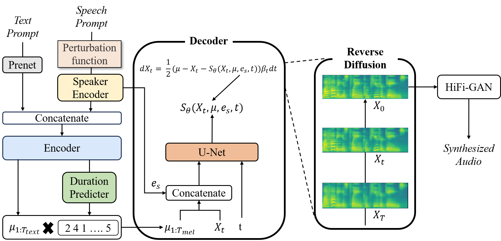

Text : Her mother's story of crazy Nancy had taken hold of her; but not as a 'caution,' rather as a parallel case to her own.
Zero-Shot Multi Speaker Speech Synthesis
Abstract
Speech synthesis refers to a technology that converts text into speech waveforms. With the de-velopment of deep learning, neural network-based speech synthesis technology is being re-searched in various fields, and the quality of synthesized speech has also been greatly improved. In particular, Grad-TTS, a speech synthesis model proposed based on the Denoising Diffusion Probabilistic Model (DDPM), which shows high performance in various domains, generates high quality speech and supports multi-speaker speech synthesis. However, there is a disadvantage that speech synthesis for unseen speaker is not possible. Therefore, in this paper, we propose an effective Zero-Shot Multi-Speaker speech synthesis model by improving the Grad-TTS structure. The proposed method allows receiving speaker information from speech references using a pre-trained speaker recognition model. Additionally, by converting speaker information via information perturbation, the model can learn various speaker information other than the speakers held in the dataset. To evaluate the performance of the proposed method, we measured the objective performance indicators Speaker Encoder Cosine Similarity (SECS) and Mean Opin-ion Score (MOS). In order to evaluate the synthesis performance for both seen speaker and un-seen speaker scenarios, a comparison was conducted with Grad-TTS, SC-GlowTTS, and YourTTS. The results demonstrated not only excellent speech synthesis performance for seen speakers but also performance similar to the Zero-Shot Multi-Speaker speech synthesis model.
Overall structure of proposed Zero-Shot Grad-TTS
The audio sample below is a sample synthesized using the model proposed in this paper.
Speech synthesis sample for Seen speaker - LibriTTS
Ground Truths
Text : He tells us how he went one night with a band of these wild companions to rob the fruit-tree of a poor neighbour.
Text : For example, the power of intellect is not sensible; none of the inner qualities of man is a sensible thing; on the contrary, they are intellectual realities.
Text : It was like the reflections from a score of mirrors placed round the walls at different angles.
Grad-TTS
Text : Her mother's story of crazy Nancy had taken hold of her; but not as a 'caution,' rather as a parallel case to her own.
Text : He tells us how he went one night with a band of these wild companions to rob the fruit-tree of a poor neighbour.
Text : For example, the power of intellect is not sensible; none of the inner qualities of man is a sensible thing; on the contrary, they are intellectual realities.
Text : It was like the reflections from a score of mirrors placed round the walls at different angles.
Ours
Text : Her mother's story of crazy Nancy had taken hold of her; but not as a 'caution,' rather as a parallel case to her own.
Text : He tells us how he went one night with a band of these wild companions to rob the fruit-tree of a poor neighbour.
Text : For example, the power of intellect is not sensible; none of the inner qualities of man is a sensible thing; on the contrary, they are intellectual realities.
Text : It was like the reflections from a score of mirrors placed round the walls at different angles.
Speech synthesis sample for Unseen speaker - VCTK (SC-GlowTTS)
Ground Truths
Text : She can scoop these things into three red bags, and we will go meet her Wednesday at the train station.
Text : We also need a small plastic snake and a big toy frog for the kids.
Text : Ask her to bring these things with her from the store.
Text : When the sunlight strikes raindrops in the air, they act as a prism and form a rainbow.
SC-GlowTTS
Text : If you thought I lived in New York, why in the world didn't you come and see me? the lady inquired.
Text : Montrose also, after having experienced still more variety of good and bad fortune, threw down his arms, and retired out of the kingdom.
Text : I knew you could not choose but like her; but yet, let me tell you, you have seen but the worst of her.
Text : He knew now that his absence, for as long as he had to be away, would be covered up and satisfactorily accounted for.
Ours
Text : If you thought I lived in New York, why in the world didn't you come and see me? the lady inquired.
Text : Montrose also, after having experienced still more variety of good and bad fortune, threw down his arms, and retired out of the kingdom.
Text : I knew you could not choose but like her; but yet, let me tell you, you have seen but the worst of her.
Text : He knew now that his absence, for as long as he had to be away, would be covered up and satisfactorily accounted for.
Speech synthesis sample for Unseen speaker - VCTK (YourTTS)
Ground Truths
Text : The rainbow is a division of white light into many beautiful colors.
Text : These take the shape of a long round arch, with its path high above, and its two ends apparently beyond the horizon.
Text : There is , according to legend, a boiling pot of gold at one end.
Text : When a man looks for something beyond his reach, his friends say he's looking for the pot of gold at the end of the rainbow.
YourTTS
Text : I do not know how, but you must keep the matter in mind and perhaps the chance will come to you, she replied.
Text : With thee have I wandered about in the remotest, coldest worlds, like a phantom that voluntarily haunteth winter roofs and snows.
Text : Nay, I rather thrilled, Distrusting every light that seemed to gild The onward path, and feared to overlean A finger even.
Text : The Land decree of the Congress of Soviets is identical in its fundamentals with the decisions of the first Peasants' Congress.
Ours
Text : I do not know how, but you must keep the matter in mind and perhaps the chance will come to you, she replied.
Text : With thee have I wandered about in the remotest, coldest worlds, like a phantom that voluntarily haunteth winter roofs and snows.
Text : Nay, I rather thrilled, Distrusting every light that seemed to gild The onward path, and feared to overlean A finger even.
Text : The Land decree of the Congress of Soviets is identical in its fundamentals with the decisions of the first Peasants' Congress.
Source of voice samples used for comparison
The voice samples of SC-glowTTS and YourTTS used for model comparison were the samples provided in the link below.